Gerenciar Projetos
Cadastrar, consultar, editar, excluir e restaurar projetos, definindo status, prioridade e responsável. A exclusão é lógica e informa antes a quantidade de tarefas vinculadas.
Atores: Administrador, Gerenciador de Projetos
Portfólio do Projeto de Estágio
Um lugar só para cadastrar projetos, organizar o backlog, acompanhar o andamento das tarefas e enxergar gargalos da equipe.
Centralizar o gerenciamento de tarefas e projetos em uma ferramenta simples e intuitiva, dando aos gestores uma visão consolidada das demandas sem exigir treinamento ou conhecimento avançado em metodologias de gestão.
Muitas equipes controlam suas demandas em planilhas, aplicativos de mensagens e documentos compartilhados. Com a informação espalhada, fica difícil acompanhar as atividades, identificar prioridades, monitorar prazos e saber quem está sobrecarregado.
Ferramentas como Jira, Trello e Microsoft Planner resolvem isso, mas trazem configuração complexa e excesso de recursos para pequenas empresas, equipes acadêmicas e grupos de trabalho.
O SGTP reúne em uma aplicação web o cadastro de projetos, o backlog de tarefas com prioridade e responsável, a atualização de andamento com regras de transição de status e um painel com indicadores operacionais.
Projetos e tarefas usam exclusão lógica: nada é apagado do banco, e o que foi excluído pode ser restaurado. Toda alteração em uma tarefa fica registrada em um histórico de atividades.
A aplicação é organizada em três camadas. A interface não implementa regras de negócio, e o acesso aos dados fica isolado em repositórios.
Cadastrar, consultar, editar, excluir e restaurar projetos, definindo status, prioridade e responsável. A exclusão é lógica e informa antes a quantidade de tarefas vinculadas.
Atores: Administrador, Gerenciador de Projetos
Cadastrar, consultar, filtrar, editar, excluir e restaurar tarefas dos projetos, com prioridade, prazo e responsável. Toda operação é registrada no histórico de atividades.
Ator: Gerenciador de Projetos
O responsável altera o status da tarefa entre Pendente, Em Andamento, Bloqueada e Concluída, respeitando as transições do diagrama de estados. Bloquear exige o motivo do impedimento.
Ator: Colaborador
Painel com a situação atual: projetos ativos, tarefas por status, entregas críticas dos próximos 14 dias, carga por responsável, tempo médio de conclusão e atividades recentes.
Ator: Gerenciador de Projetos
Extensão opcional do UC06: gera um relatório detalhado de um período, com tarefas concluídas por colaborador, atrasos, bloqueios e tempo médio de conclusão, com exportação em PDF.
Ator: Gerenciador de Projetos · estende o UC06
Indicadores consolidados de um período no módulo de Relatórios: taxa de conclusão dos projetos, tempo médio de conclusão, atrasos e capacidade de cada colaborador.
Ator: Gerenciador de Projetos
| Caso de uso | Situação | Conclusão ou previsão | Observação |
|---|---|---|---|
| UC02 · Gerenciar Backlog Operacional | Concluído | 30/09/2026 | Exclusão lógica e restauração incluídas em 11/2026 |
| UC04 · Visualizar Fluxo Operacional | Concluído | 30/10/2026 | Tempo médio de conclusão calculado a partir de 11/2026 |
| UC01 · Gerenciar Projetos | Concluído | 13/11/2026 | Com exclusão lógica e restauração |
| UC03 · Atualizar Andamento da Tarefa | Concluído | 13/11/2026 | Validação das transições de status e histórico |
| UC06 · Visualizar Relatórios Executivos | Em andamento | 18/12/2026 | Faltam filtros por projeto e período e o detalhe de indicador |
| UC05 · Gerar Relatório de Produtividade | Previsto | 29/01/2027 | Depende do UC06 e do controle de acesso por perfil |
O planejamento inicial previa a implementação do UC01 e do UC02 primeiro. Durante o estágio, o UC04 foi antecipado e o diagrama de caso de uso foi consolidado de 23 para 6 casos de uso; a tabela reflete o andamento atual.
Diagramas estruturais e de comportamento
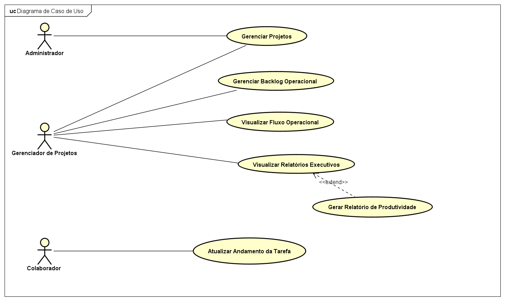
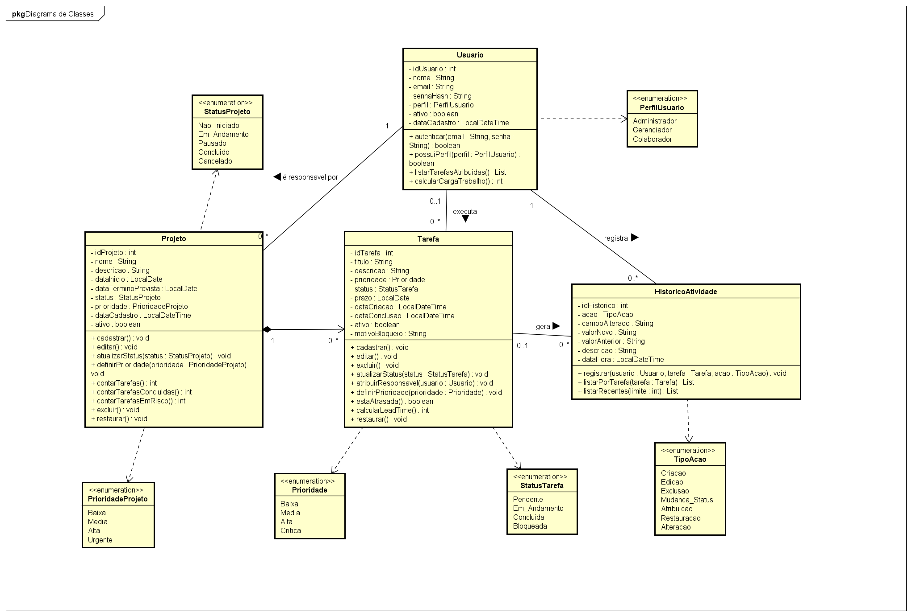
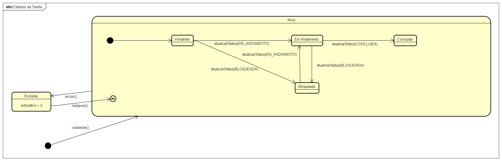
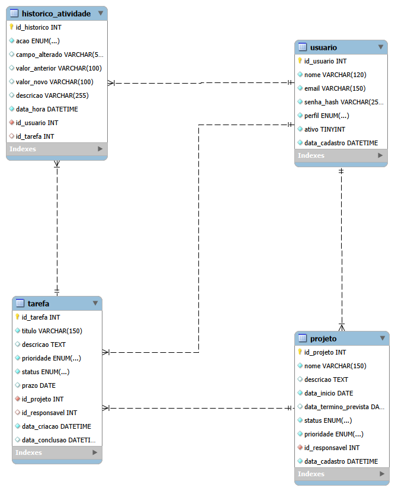
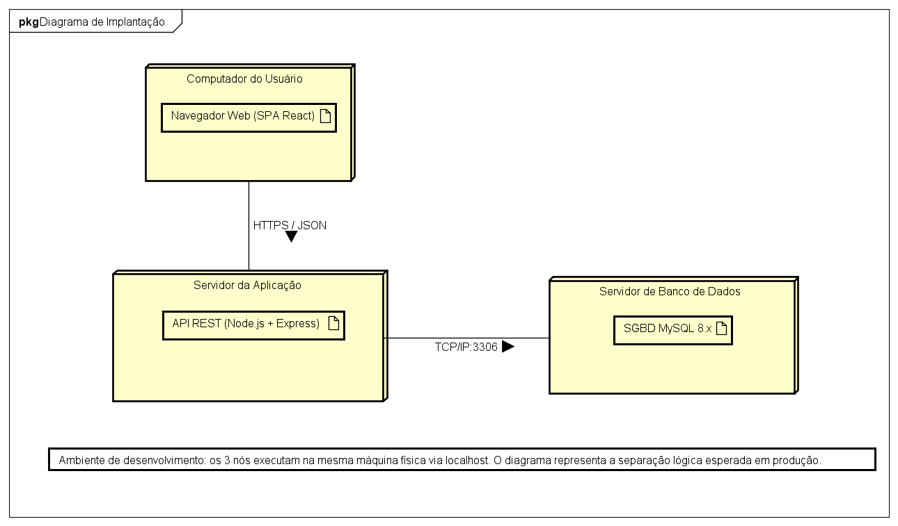
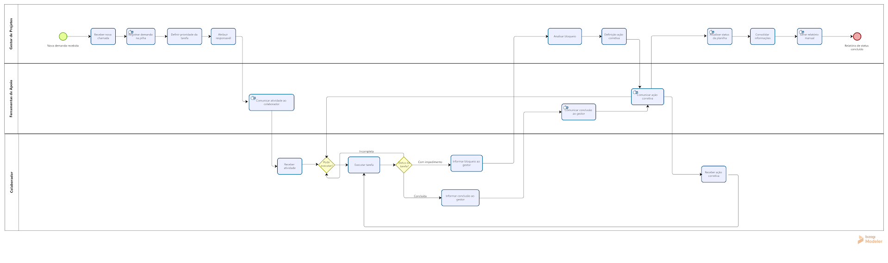
Diagramas de sequência
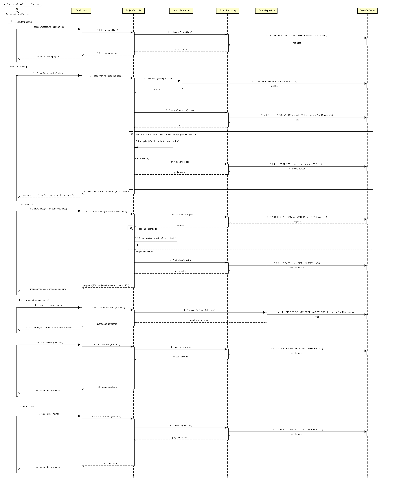
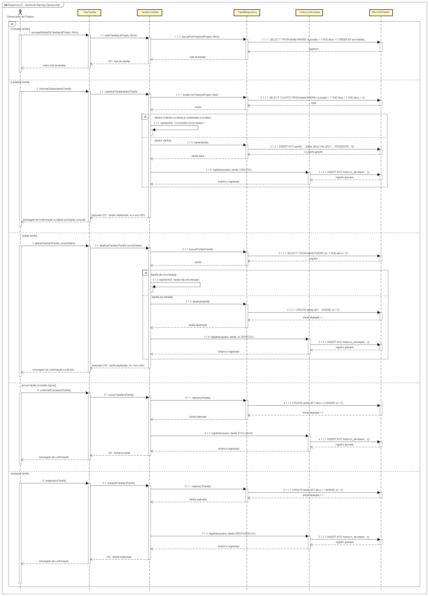
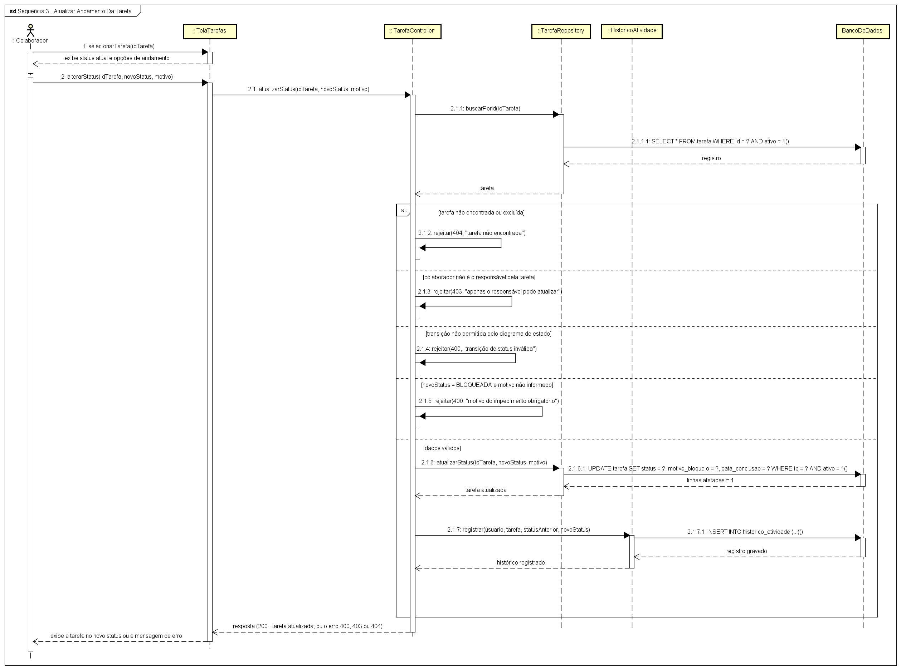
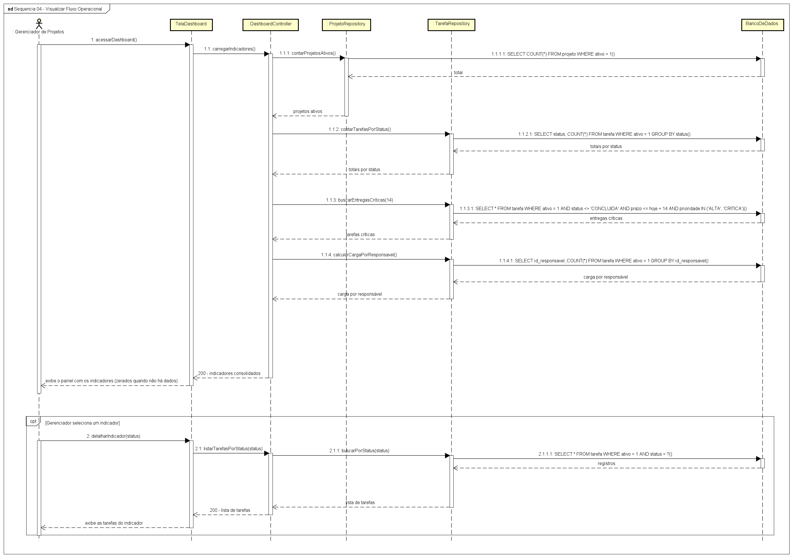
Especificações de caso de uso (PDF)
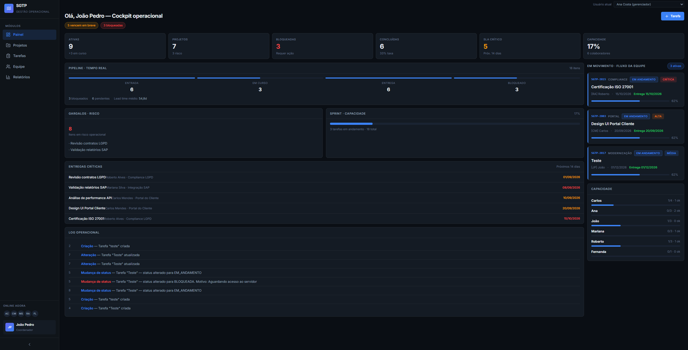
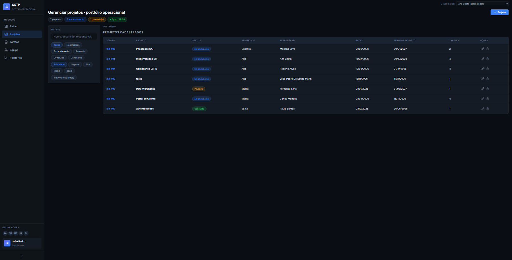
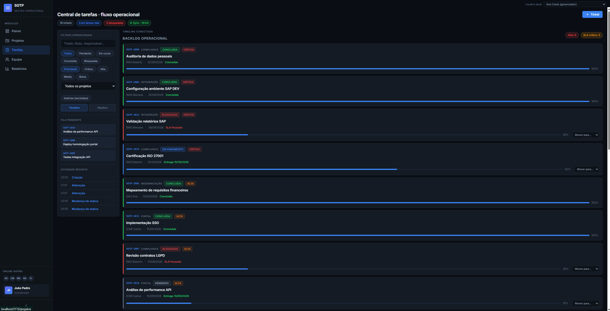
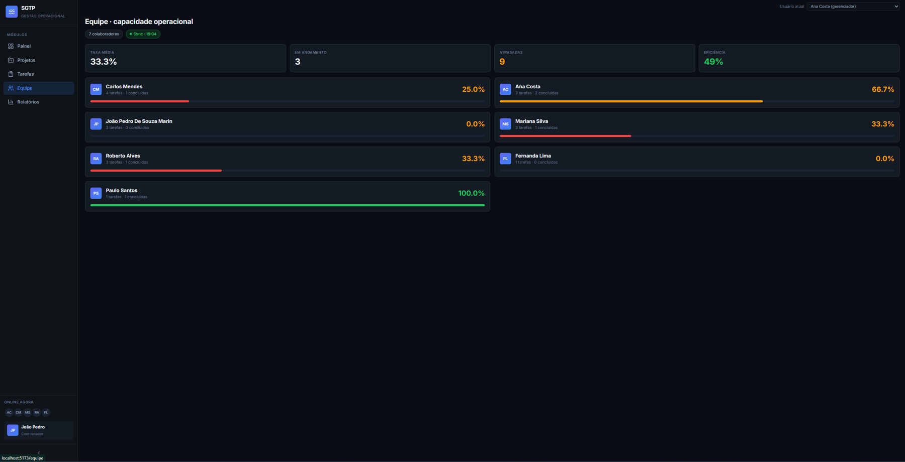
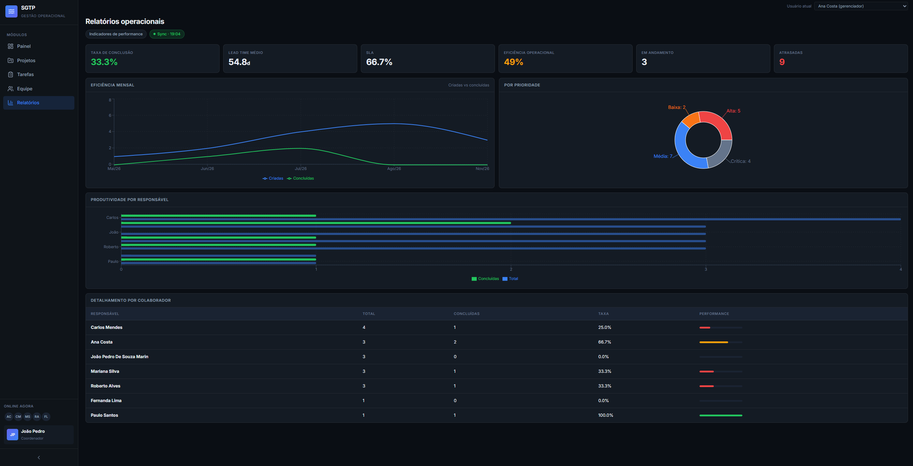
Relatório atualizado com as atividades desenvolvidas até a entrega deste portfólio: modelagem do sistema, especificações dos seis casos de uso, diagramas e implementação.
Abrir o Relatório de Estágio (PDF)Ciência da Computação · Centro Universitário Filadélfia (UniFil) · Estágio realizado na Alliance Consultoria.